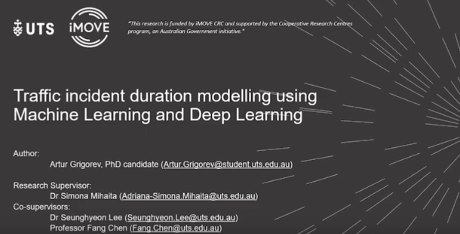

Traffic Accident Duration and Impact Prediction
IEEE NSW UNITE 2022
Predicting the duration of traffic accidents is a challenging task due to the stochastic nature of these events. The ability to accurately predict how long accidents will last and which impact it will cause on traffic flow can provide a significant benefits to both end-users (by providing better routes mitigating accident effects) and traffic operation managers (to determine how many resources needs to be allocated in accident management).
The Integrated Analysis of Accident Reports and Traffic Flow Data Sets With Early Traffic Disruption Detection and Segmentation
Transportation Research Board: Annual Meeting 2023
Many accident modelling studies still rely on the reported accident data logs as ground truth, which can be affected by reporting errors. To avoid these errors, the actual accident duration can be estimated from traffic state readings. The ability to accurately predict how long accidents will last and which impact it will have on the traffic state can provide a significant benefit to both end-users (by providing better routes mitigating accident effects) and traffic operation managers (to determine how many resources need to be allocated in accident management). The study focuses on the San Francisco area in Unites States (83 detectors stations, 9,275 accident reports, 1,792 accident reports with Vehicle-Detector-Station (VDS) association).
[VIDEO] Traffic incident duration modelling using Machine Learning and Deep Learning.
UTS FEIT HDR Showcase 2021

The video been presented at Research Projects Showcase of the Faculty of Engineering and IT at UTS.
[VIDEO] IEEE ITSC 2021 - How will electric vehicles affect traffic congestion and energy consumption?
The video presents the paper "How will electric vehicles affect traffic congestion and energy consumption: an integrated modelling approach," 2021 IEEE International Intelligent Transportation Systems Conference (ITSC), Indianapolis, IN, USA, 2021, pp. 1635-1642, A. Grigorev, T. Mao, A. Berry, J. Tan, L. Purushothaman and A. -S. Mihaita, doi: 10.1109/ITSC48978.2021.9564561.